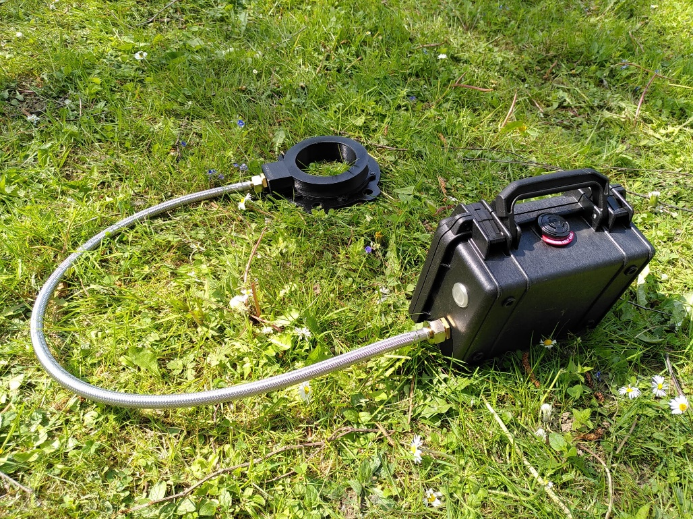
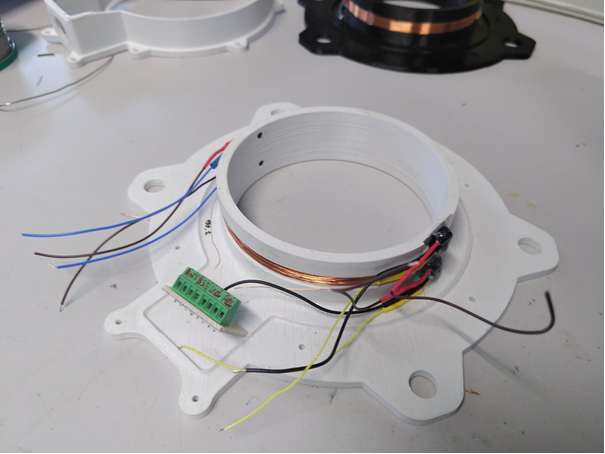
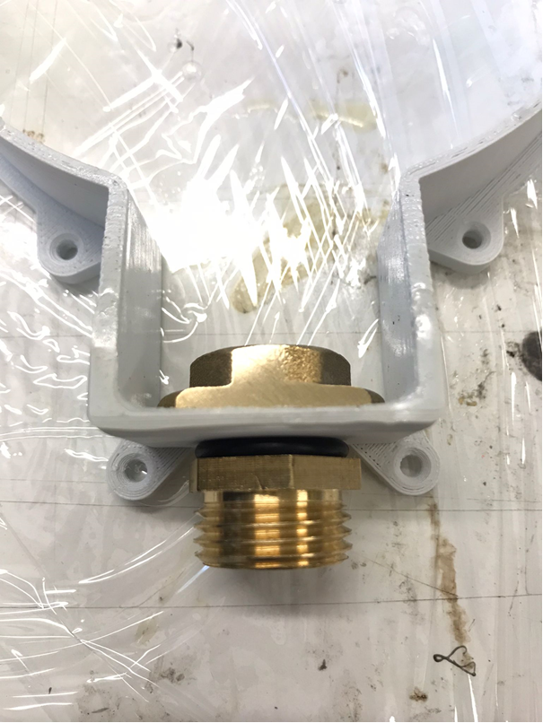
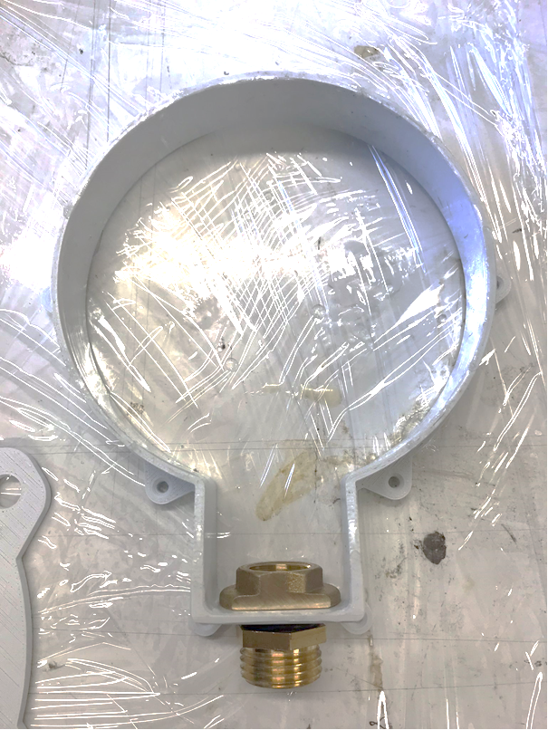
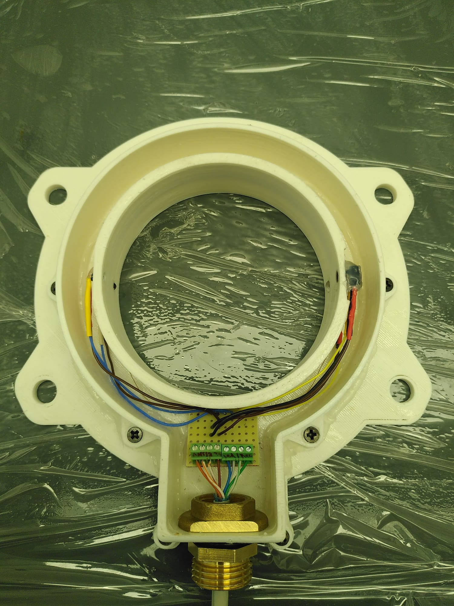
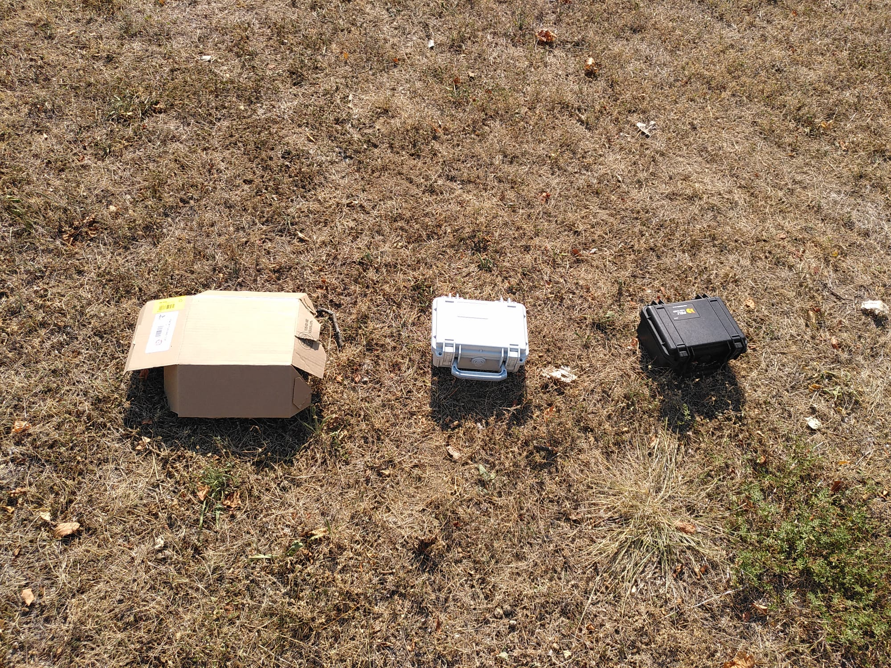

Projet Interreg Cricetus
Réu de commencement du 17janvier note :
https://etherpad.in2p3.fr/p/17janv
Mécanique
Vue d'ensemble

{width="6.891771653543307in" height="3.8652777777777776in"}Nomenclature
Extrait de la nomenclature mécanique :
1 Mamelons court mamelons réduits à visser Leroy Merlin [65814385]{.underline}
laiton M 12 x 17 pour tube
en cuivre
2 écrou large contre-écrous à visser Leroy Merlin 65816345
laiton M 12 x 17 pour tube
en cuivre
3 Gaine Inox Flexible Inox Ff15x21 Leroy Merlin [84420925]{.underline} Longueur 800 Mm - Dn8
4 Capuchon Couvercle de protection RS PRO 134-6527
poussière pour Bouton-poussoir série
MSM 19\
série AV Transparent
5 Mamelon Long Adaptateur Laiton Droit RS PRO 3108781
Legris R Mâle 1/2pouce -
Mâle 3/8pouce
6 écrou laiton Écrou de tube Norgren RS PRO 226-763 série 22 G 3/8 Laiton
7 malette Malette de transport Peli RS PRO 2963098
Pelicase 1120 en\
Polypropylène, Dimensions
externes 90 x\
206 x 167mm, étanche
8 joint torique joint torique support RS PRO 1964872 gaine (dima ??)
Partie Antenne
La partie Antenne est en 2 pièces :
-
Une pièce qui forme les bords intérieurs. On y insert les capteurs IR et on y câble directement l'antenne. Pièce « Socle.stl »
-
Une pièce qui forme les bords extérieurs et vient se visser sur la première, avec un joint étanche pour assurer l'étanchéité entre les 2. Pièce « Socle_couvercle.stl »

{width="5.276119860017498in" height="3.3286537620297465in"}
{width="2.183905293088364in" height="2.9092869641294836in"}
{width="2.208954505686789in" height="2.9421052055993in"}
Partie Malette
PHOTO Mamelons + bouton sur malette
Assemblage Mecanique
Partie Antenne :
-
Impression 3D du « Socle.stl » et du ~~« Couvercle_creux.stl »~~ « Socle_couvercle.stl »en ABS
-
1^ère^ couche de résine époxy d'imprégnation sur les parois qui recevront la coulée. Prendre une résine prise longue (par ex 24h) pour avoir le temps d'étaler la résine au pinceau sur les parois. (Exemple Araldite DBF et son durcisseur HY956)
Socle :
-
Câblage Antenne pour une impédance de 190uH (+ ou - 29 spires)
-
Câblage IR (récepteurs et led émetrices)
-
Collage (étanche) des IR sur Socle
-
LED IR à emmancher de force + colle chaude pour être sûre
-
Récepteur IR à maintenir en position par colle chaude
-
Couche de colle polyuréthane (Araldite 2028-1 au pistolet ) pour former un bulbe sur la partie intérieur (et éviter la terre de s'accumuler au passage des hamsters).
-
-
Soudure câbles IR sur plaquette de jonction. Couper les fils IR au plus court pour éviter qu'ils dépassent de la coulée. Attention à dénuder le moins possible les fils du côté de la plaquette pour éviter des court-circuits entre les câbles.
Couvercle :
-
Préparation câble Ethernet : dénuder et étamer les deux extrémités des fils.
-
Usiner deux méplats sur l'écrou large en laiton
-
Visser les fils sur bornier à vis
-
Vérifier fonctionnement de la partie antenne
-
Visser mamelons laitons + joint torique avec l'écrou large sur le couvercle.
-
Installation joint en mousse dans le mamelon qui assure étanchéité entre câble et mamelon.
-
Passer le câble dans l'entrée du couvercle (donc dans le joint en mousse + mamelon + écrou)
Coulée
-
Application du Silicone (LOCTITE SI 595 Superflex transparent application à la seringue) sur toute la jonction socle/couvercle
-
Visser le couvercle sur le socle à l'aide de vis auto-taraudeuses (6mm)
-
Attendre le séchage complet avant nouvelle manipulation
-
-
Doubler l'étanchéité à l'aide de pâte à fixe au niveau du mamelon et partout où cela semble nécessaire
-
Maintenir le câble en hauteur et installer la partie antenne bien à plat
-
Couler la résine époxy prise rapide et opaque dans l'antenne. ( Rencast FC 52 Polyol + isocyanate chez Samaro OU chez Résine et moulage : KIT RESINE EPOXY DE COULEE DIELECTRIQUE NOIRE 1060/68 )
Partie Malette
-
Peindre en blanc la malette : 1 couche d'apprêt plastique sur toutes les faces avant de faire au moins 3 couches de peinture blanche.
-
Perçages et fixation des différents composants en sortie de la malette.
-
Etanchéifier avec un joint torique pour le mamelon en laiton, avec du silicone la fixation des boutons avec capuchons poussières. En effet les joints toriques prévus pour les boutons ne peuvent être utilisés avec en plus les capuchons de poussière.
-
Passage du câble Ethernet dans gaine inox + mamelon long
-
Collage écrou de la gaine inox sur les 2 mamelons, côté antenne et malette, pour éviter que la gaine se dévisse. (Araldite 2028-1 au pistolet) /!\ Ne pas trop serré pour permettre à l'antenne de tourner sur elle-même
-
Fixation des supports de cartes dans malette
-
Découpe mousse de la malette, au format de la batterie, avec cutter.
Test température au soleil
Test réalisé le 04 août 2022 sur « l'herbe » devant le bâtiment 24.
Thermomètre utilisé : thermomètre infrarouge sans-contact pouvant mesurer de 0° à 100°C.
Valise Valise Valise Sol au Sol à
carton blanche noire soleil l'ombre
Avant 30 30 30
installation
13h25
13h45 40 48 58 31 40
14h45 52° 52° 66° 60 33
15h45 51 51 65 57 35
16h45 48 50 66 60 35
La Peli-case sous le carton st noire.

Electronique
Circuit général
Voir wiki sur Gitlab
Consommation
Mesures
Test consommation effectué avec une alimentation programmable (KEYSIGHT N6705C).
Alimentation 5V du Feather M0 + RTC + RFID en acquisition
 {width="3.3333333333333335in"
height="2.5in"}
{width="3.3333333333333335in"
height="2.5in"}

Puis test avec l'alim à la place de la batterie en 3.6V branchée sur le PowerBoost
Tout compris RFID au repos
 {width="4.395833333333333in"
height="3.2968755468066493in"}
{width="4.395833333333333in"
height="3.2968755468066493in"}
Tout compris RFID en acquisition
 {width="3.3333333333333335in"
height="2.5in"}
{width="3.3333333333333335in"
height="2.5in"}
+-----------------------------------+-----------------------------------+ | Carte Feather M0 + RTC | 14mA | +===================================+===================================+ | Carte Tectus + antenne | Allumée au repos : 15mA | | | | | | En acquisition : 100mA sur 150ms | +-----------------------------------+-----------------------------------+ | Système Total* : | 0.18W RFID éteinte | | | | | | 0.26W RFID au repos | | | | | | 0.38W de moyenne en acquisition | | | sur 6.8 secondes (10 lectures | | | RFID) | +-----------------------------------+-----------------------------------+ | * : 2 paires | | | emetteurs/recepteurs IR + Feather | | | Mo + RTC+ Carte RFID + Powerboost | | | 5V | | +-----------------------------------+-----------------------------------+
Calcul Autonomie

Câblage
Antenne Terrier:
Un câble type « ethernet », de 3 paires de fils torsadés, est utilisé pour relié la partie Antenne de la malette étanche.
 {width="4.256163604549431in"
height="2.96875in"}
{width="4.256163604549431in"
height="2.96875in"}
Vert Récepteur IR 1
Blanc/Vert Récepteur IR 2
Bleu Emetteur IR 1
Blanc/Bleu Emetteur IR 2
Marron 3.3V
Blanc/Marron GND
Orange Antenne +
Blanc/Orange Antenne -
Blindage Câblé au GND
 {width="3.6149464129483815in"
height="4.186491688538933in"}
{width="3.6149464129483815in"
height="4.186491688538933in"} {width="1.299271653543307in"
height="0.29826662292213474in"}
{width="1.299271653543307in"
height="0.29826662292213474in"}
RFID
Calcul Antenne
A partir du script python d'arthur (\\sbgpcs96.in2p3.fr\mibe\Projets\RFID Antennes\Script)
Contrainte : Pour une inductance de 190uH et un diamètre d'environ 98mm
 {width="6.3in" height="6.409027777777778in"}
{width="6.3in" height="6.409027777777778in"}
Résultat : 29 spires
Carte moyenne Puissance
Dakota 2010-0 TLB-30-BB LF
\Projets\RFID Tectus
 {width="6.298611111111111in"
height="1.1881944444444446in"}
{width="6.298611111111111in"
height="1.1881944444444446in"}
IR module
Exemples/Tuto
-
Comptage par franchissement d'une barrière infrarouge avec Arduino UNO http://makerspace56.org/comptage-par-franchissement-dune-barriere-infrarouge/
-
Youtube la grotte du geek, code écrit par l\'environnement STM32CubeIDE https://www.youtube.com/watch?v=_tcBtZZDsCE
-
Adafruit "Using an Infrared Library on Arduino" https://learn.adafruit.com/using-an-infrared-library/sending-ir-codes
Librairie pour moduler signal IR:
A fast PWM library for SAMD21G-based Arduinos https://github.com/ocrdu/Arduino_SAMD21_turbo_PWM
Informatique
Problème réactivité de la lecture RFID
La lecture RFID au début du projet était trop lente pour détecter le passage des hamsters. Pour résoudre ce problème les modifications suivantes ont été apportées :
-
L'alimentation déclenchée par une détection IR a été modifiée par une alimentation continue de la carte RFID. Cela permet d'éviter le temps de démarrage de la carte.
-
Un délai de 10ms après une demande de lecture et après la lecture de sa réponse.
-
La commande de lecture de la réponse RFID « Serial1.redString () » a été remplacée par « Serial1.readStringUntil('\r') ». Cela permet de s'arrêté de lire dès que la carte à envoyer son caractère de fin.
{width="6.3in" height="0.7527777777777778in"}
- La résolution d'une petite erreur sur la détection IR permet une lecture RFID dès que l'IR change d'état (de 0 à 1 ou de 1 à 0). Avant la lecture RFID n'était demandée qu'une fois que la barrière IR était rétablie (fin du passage du hamster). C'était déjà trop tard pour demander une lecture.
Question pour Pauline :
- Dans la CAO mécanique, qu'est ce que Socle creux.stl ? quelle est la différence avec Socle_Couvercle.stl ? puisque quand on ouvre les deux pièces, elles ont l'air identique.